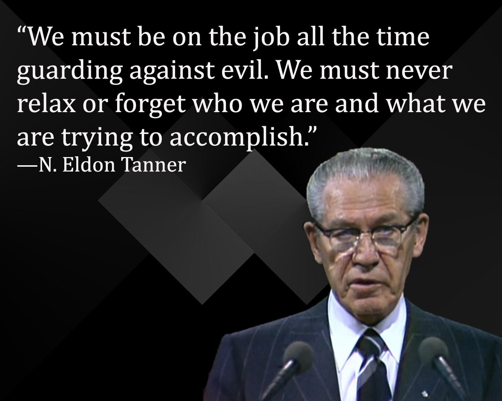
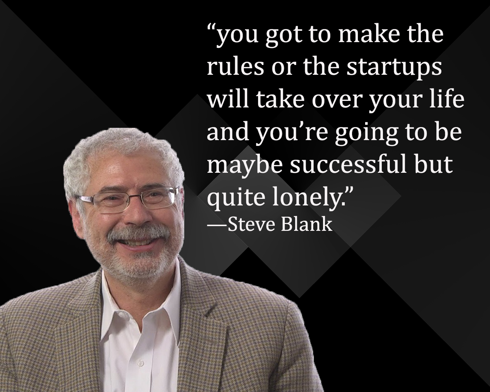
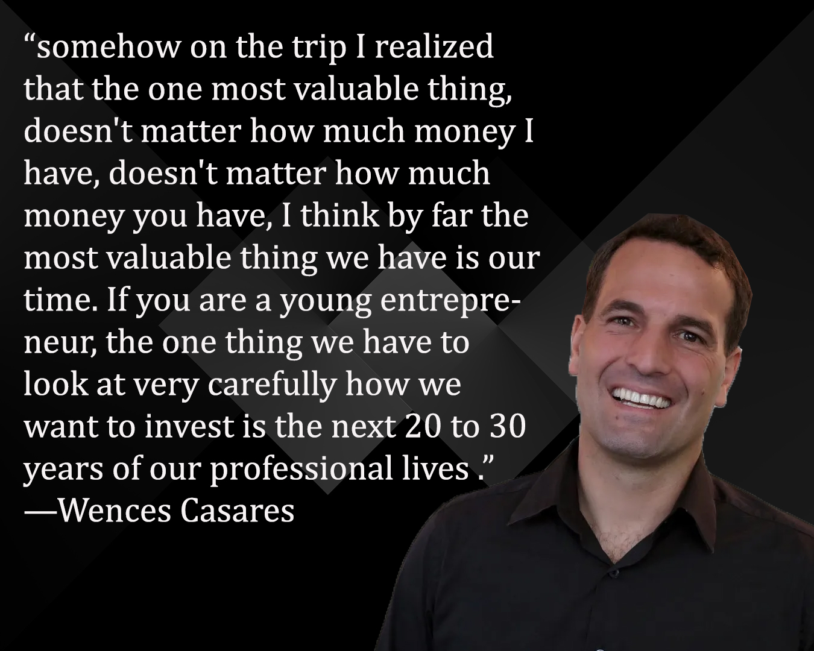
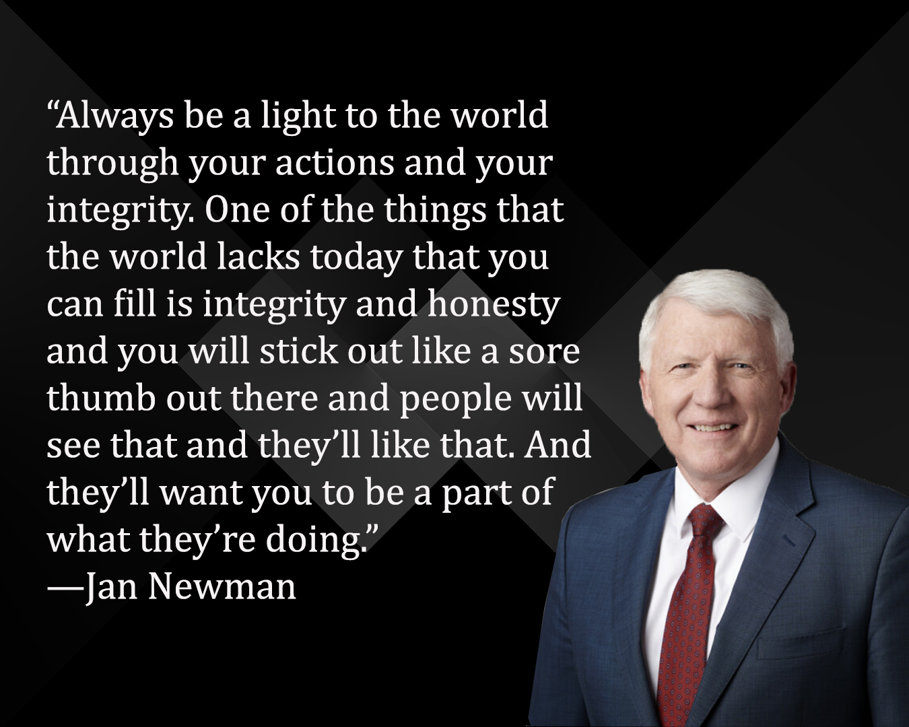

Week 06 Journal Entry
Success Is Gauged by Self-Mastery
The talk Success Is Gauged by Self-Mastery by President N. Eldon Tanner, given in April 1975, brought a smile to my face when I heard Brazil mentioned. He shared how members were thrilled and excited when the President announced that a temple would be built in São Paulo. That temple was dedicated three years later. Today there are 11 temples in Brazil, with 5 more under construction and 8 announced. It is amazing to see the growth of the Church in my home country and all around the world. It makes me feel so grateful.
I felt the Spirit so strongly while listening to this talk. The truths he taught so many years ago are still so relevant and valuable today. One of the lessons that touched me most was about self-mastery. He said there are two key elements. The first is to determine your course or set your moral standards. The second is to have the willpower, the wind in the sails, to carry you forward. He explained that character is built by mastering ourselves toward good ends. True character commands respect and admiration, and its absence brings only pity.
I love the example of his grandson, who decided to be a hundred percenter in his commitments. His dedication, discipline, and willingness to make sacrifices for what he knew was right show how self-mastery can shape a beautiful life.
This talk taught me powerful lessons about self-mastery and the privilege of the priesthood, which I want to keep close to my heart. Holding the priesthood is a sacred responsibility and an opportunity to act in God’s name, build His kingdom, and prepare for eternal life. True success is measured by our ability to control our thoughts, actions, and desires through self-discipline, moral integrity, and consistent effort. Following the straight and narrow path, even when it is challenging, allows us to achieve our goals, experience real happiness, and receive lasting blessings. Some lessons that stood out to me most are that self-mastery builds character, consistency matters more than occasional effort, and sacrifice is an essential part of growth. Small daily choices like keeping commitments, living the Word of Wisdom, and attending meetings gradually shape long-term success. Living with discipline prepares us to fulfill God’s callings, serve others, and reach our divine potential. Faith in action by applying gospel principles and striving to stay righteous guides us, protects us, and allows us to live a life of purpose, joy, and eternal blessings.
So You Want to Be an Entrepreneur?
I read So You Want to Be an Entrepreneur? and it gave me a practical perspective on starting a business. The story about Bubba showed that people can run successful companies without going to business school. The article also points out that many successful entrepreneurs, like Sam Walton, Bill Gates, and Herb Kelleher, built their companies using simple ideas and consistent execution.
I learned that there are three important areas of knowledge I need to develop before starting a business: understanding my industry and building a network of contacts, managing daily operations, and raising money. Every job, connection, and challenge can help me gain these skills and prepare me for the future. I can use my current experiences to observe, learn, and build relationships so that when the right opportunity comes, I will be ready.
How Entrepreneurs Craft Strategies That Work
This article really showed me that being an entrepreneur isn’t about having every answer or waiting for the perfect plan. Success comes from taking action, learning as you go, and adjusting along the way. The most successful entrepreneurs focus on ideas with the most potential, test them in the real world, and refine them based on what actually works. Quick decisions and doing things well often matter more than endless research or complicated strategies, and overthinking can easily become a trap that stops progress. Sometimes it’s better to test a “good enough” idea today than to wait for a “perfect” one that might be too late.
I also realized that having a creative idea is only part of the story. Execution is what makes an idea valuable, whether it’s finding the right niche, responding to changes in the market, or building strong relationships with customers and partners. It was encouraging to see that there isn’t just one type of entrepreneur. People with very different strengths, personalities, and ways of thinking can succeed if they are resourceful, flexible, and willing to keep going even when things get messy. Courage, persistence, and learning from mistakes are what turn ideas into real opportunities.
The Entrepreneur and the Family
The video The Entrepreneur and the Family by Steve Blank teaches that balancing entrepreneurship with family life requires intentional effort and clear boundaries. Startups can easily consume all of an entrepreneur’s time and energy, leaving little room for relationships and personal life. Steve Blank shares his personal approach, emphasizing the importance of setting rules, such as having dinner at a set time, putting children to bed, and reserving weekends for family while still finding time to work. He notes that these boundaries allow entrepreneurs to be successful without becoming lonely or neglecting their loved ones. Ultimately, the video highlights that whether male or female, anyone pursuing entrepreneurship must consciously protect their family life to maintain both professional success and personal fulfillment.
Three Lessons About What It Means to Be an Entrepreneur
I thought it was really interesting what Wences Casares shared in the video about what it means to be an entrepreneur. He explained that being an entrepreneur isn’t really a choice, it’s part of who you are, and even if the world changed, you would still be an entrepreneur. What stood out to me most was his perspective on time as the most valuable asset we have, especially as young entrepreneurs, and how thinking long-term and investing our energy over decades can create far more value than focusing only on money or short-term gains. I also found his idea that focusing on one venture and committing to it fully can create the greatest impact very powerful, and it made me think about how much value can come from patience, dedication, and growing something over time rather than constantly chasing the next big thing.
Loyalty to God and Family
I loved this video. Jan Newman teaches some essential lessons regarding the balance between professional ambition and spiritual commitment. He teaches that while building a career or business is important, it must never come at the expense of one's devotion to God and family.
Key Takeaways:
- Prioritizing Service: We must never be too busy to accept a calling. God wants our personal service.
- The Long View: In the long run, our true legacy is our family and service to God.
- Integrity as a Beacon: Honesty and moral standards set entrepreneurs apart in a powerful way.